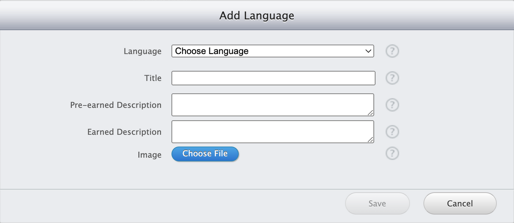

Apple iOS GameKit Tutorial


Introduction
GameKit enriches iOS games by enabling social gaming features.
It's crucial for engaging users in a more interactive and competitive environment.
For a game like 2048, GameKit can significantly enhance the gaming experience
by adding a social dimension through leaderboards and achievements,
motivating players to improve their skills and engage more deeply with the game.
The 2048 game, a simple yet addictive puzzle, will integrate GameKit to enhance user
engagement through the Game Center. We'll add achievements for reaching key milestones
(like achieving the 2048 tile), and leaderboards to foster a competitive environment.
This will not only increase the game’s replayability but also leverage the social aspect
of gaming by allowing players to compare their scores with friends and the global player base.
Overview
This section will delve into the specifics of adding GameKit features to the 2048 game, demonstrating how to make a simple game more engaging and competitive.
Getting Started
We'll use the latest Xcode version and Swift 5, targeting iOS 14 and above.
We'll guide you through setting up GameKit in your project,
ensuring you have all the necessary tools and dependencies installed.
In order to add Game Center to your app you will first need to create an app on App Store Connect.
This will require that you have an Apple Developer account. Once you have logged in you will go
to the “My Apps” section and create a new app. In this creation you will link the app using
your unique “bundle identifier” which you can find inside your XCode project under “Signing & Capabilities.

While creating your app, make sure to give it permissions for “Game Center”.
For the purposes of this tutorial the app will require no other permissions other than Game Center.
Now that your app has been created you will need to add Game Center to the app itself inside of Xcode.
To do this you will again go to the “Signing & Capabilities” page under your project. Once here you will
need to click on the “Team” dropdown menu and, if you haven’t added your account yet, you will need to
add your account. After your account has been added you will need to select it in this dropdown menu.
Now, you will click on the “+ Capability” button which can be found near the top-left of the image above.

This will bring up the capabilities search menu. You can either scroll through the options and find “Game Center”
or you can search for it using the search bar. Once you locate it you will double click on it and that will add
it to your project. Now you will be able to utilize GameKit inside of your project.
Integration
For ease of access we recommend putting the Game Center code in its own file and class.
This step is optional but will make the code much more readable and clean. You will then be able
to create @StateObject variables of the class in the other files that need to access the functions and data.
The class will need to be of type ObservableObject and can be outlined like so:
class GameCenterHandler: ObservableObject {}
When creating a separate class for all of the Game Center handling like this it is important to make sure that only a single instance of the class is created and passed around. To accomplish this we will create a singleton like so:
static let shared = GameCenterHandler()
This “shared” variable will allow us to access this single instance of the GameCenterHandler class. From here we will need two more variables before we can authenticate our player. Those being a variable containing the local player themself and a variable of type @Published to track whether the authentication view needs to be presented. This can be done like so:
var localPlayer = GKLocalPlayer.local
@Published var isPresentingAuthView = false
From here we are now ready to authenticate the local player. This is done using the GKLocalPlayer.local instance property of “.authenticateHandler”. The authenticateHandler takes a completionHandler that gives two parameters with them being a viewController and an error. The viewController will have a value containing the view for the Game Center authentication if the user is not authenticated and a value of nil if they are authenticated. Likewise, the error will have a value if there is an error or nil if there is none. We can assign this property inside of the init() function like so:
init() {
localPlayer.authenticateHandler = { viewController, error in
if viewController != nil {
// Set value to present view controller to authenticate user
GameCenterHandler.shared.isPresentingAuthView = true
} else if self.localPlayer.isAuthenticated {
// Player is authenticated
} else {
// Handle error
print(error?.localizedDescription ?? "")
return
}
}
}
There are four main states we need to check for inside of the authenticateHandler, with those being: if the viewController is not null, if the user is authenticated, if the user isn’t authenticated, and if there is an error. The first is so we can set the flag variable we created earlier to true in order to bring up the Game Center authentication view. Next, we check if the player is authenticated or not and inside of this check we can check for if the user has some restrictions placed on their Game Center account. These restrictions can be things like multiplayer restrictions or social restrictions. Next, we check if the player is not authenticated. In this we can choose to warn the user or limit game functionality or force them to retry. Finally, we check to see if there is an error and handle it properly. The order of these checks are somewhat interchangeable but in general you should check for the viewController before checking if the user is authenticated. You may also omit some of them if you have no need to do anything more inside of the check such as how the check for if the player is authenticated is empty in the example code above.
Leaderboards
Now, we will go back to the App Store Connect page for your app.
Once inside of your app you will then go to the “Services” tab
and on the left make sure you are under “Game Center”. From this location
we can now add leaderboards and achievements following the instructions below.
Scroll down to find the “Leaderboard” section. In this section you will want
to click the “+” icon next to the title to create a new leaderboard.

This will bring up a new screen asking the type of leaderboard you want to create.
For this tutorial we will be focusing on the “Classic Leaderboard” type so select that.
On the next screen you will be presented with two more sections you will need to fill out.
The first will require that you input a “Leaderboard Reference Name”, “LeaderboardID”,
the “Score Format Type”, the “Score Submission Type”, the “Sort Order”, and an optional
“Score Range”. The “Leaderboard Reference Name” is the name that will appear inside of
the App Store Connect page. The “LeaderboardID” is an identifier that you will use to
access the leaderboard inside of your code. The “Score Format Type” is the variable type
that you want the leaderboard to use for its values. The “Score Submission Type” can either
be the highest value or the most recent value. This is a personal preference for how you
want your app’s leaderboard set up. The “Sort Order” is also a personal preference of sorting
the leaderboard from low to high or high to low. Finally, there is the optional “Score Range”
that will limit the values that can be input into the leaderboard. You may have noticed a
checkbox at the top labeled “Archived” and this is a toggleable value that will disable the
leaderboard from Game Center so users no longer have access to it. The leaderboard will still
be on the App Store Connect page with all of the data but cannot be accessed by users until
the box is unchecked again.
The next section is for “Leaderboard Localization”. In this section you will need to
add one or more language localizations for your leaderboard. After selecting the
“Add Language” button you will be presented with a new pop-up with the fields “Language”,
“Name”, “Score Format”, “Score Format Suffix”, “Score Format Suffix (Plural)”, and an optional “Image”.
First, select the language you want to use for this localization. Next, for the “Name” you
will put in what you want the leaderboard’s name that will be displayed to the user. Next,
the “Score Format” will be how the data is displayed on your app. For example, if it is
money you will want it to be in the language’s typical currency. Next, both the “Score Format
Suffix” and the plural version are additional text values that you can choose to enter. These
will be placed next to the scores entered into the leaderboard so you can do things such as
“1000 cookies” if you entered “cookies” for the plural version and “cookie” for the non-plural.
Finally, you may upload an image that will be displayed as the icon for the leaderboard.
After setting up as many language localizations that you want you can now save the leaderboard you created and move on to code.
Once you are back in Xcode you will want to go back to the GameCenterHandler we created earlier.
In here we will now want to create a function for reporting/uploading the score to the Game Center
leaderboard we just created. To do this we will create a function called reportScore that takes
in two parameters of the score type Int and the leaderboardID type String. This can be done like so:
func reportScore(score: Int, leaderboardID: String) {}
The first step we will want to take inside this function is to check to make sure that the user is authenticated. This can be done using a simple if-statement to check the isAuthenticated field. We can do this either on the “GKLocalPlayer.local” or on the variable we created earlier of “localPlayer”. For example:
if localPlayer.isAuthenticated {
} else {}
Now we are ready to work on reporting the score. First, we will create a “GKLeaderboardScore()” object as a variable and assign three of its properties. The properties that we need to assign are the “leaderboardID”, the “value”, and the “player”. These will be assigned using the parameters that we pass to this function and the global variable of the localPlayer. This can be done like so:
let leaderboardScore = GKLeaderboardScore()
leaderboardScore.leaderboardID = leaderboardID
leaderboardScore.value = score
leaderboardScore.player = self.localPlayer
Now, similar to how we used the “.authenticateHandler” property, we will use the “GKLeaderboard.loadLeaderboards” property here. This property takes in two parameters of a string array of IDs and a completion handler with two parameters of an array of GKLeaderboard and an error. For the first parameter that we need to give we will simply give an array with one value of our leaderboardID. Once inside of the “.loadLeaderboards” property, we will need to check two conditions. First, if there is an error. This can be done by checking to see if the error parameter is not nil. Second, if the leaderboard exists. This can be done by checking if the leaderboards parameter is also not nil. This can be done like so:
GKLeaderboard.loadLeaderboards(IDs: [leaderboardID]) { (leaderboards, error) in
if let error = error {
print("Error loading leaderboards: \(error.localizedDescription)")
return
}
guard let leaderboard = leaderboards?.first else {
print("Leaderboard not found")
return
}
}
Finally, we are ready to attempt to submit the score. This is done using the “GKLeaderboard.submitScore” instance property inside of the “.loadLeaderboards” property we have above. The “.submitScore” property can be placed below the guard statement. This property takes in the parameters of a “score” of type Int, a “context” of type Int, a “player” of type GKPlayer, and a “completionHandler” that gives a parameter of an error. For the “score” we will pass in the “leaderboardScore.value” as an Int. For the context we will simply pass in a 0. For the “player” we will pass in the “leaderboardScore.player”. Finally, for the “completionHandler” we will check to see if there is an error or not. All of this can be done like so:
GKLeaderboard.submitScore(Int(leaderboardScore.value), context: 0, player: leaderboardScore.player, leaderboardIDs: [leaderboardScore.leaderboardID]) { (error) in
if let error = error {
print("Error reporting score: \(error.localizedDescription)")
} else {
print("Score reported successfully!")
}
}
Your final reportScore function should look something like so:
func reportScore(score: Int, leaderboardID: String) {
if localPlayer.isAuthenticated {
let leaderboardScore = GKLeaderboardScore()
leaderboardScore.leaderboardID = leaderboardID
leaderboardScore.value = score
leaderboardScore.player = self.localPlayer
GKLeaderboard.loadLeaderboards(IDs: [leaderboardID]) { (leaderboards, error) in
if let error = error {
print("Error loading leaderboards: \(error.localizedDescription)")
return
}
guard let leaderboard = leaderboards?.first else {
print("Leaderboard not found")
return
}
GKLeaderboard.submitScore(Int(leaderboardScore.value), context: 0, player: leaderboardScore.player, leaderboardIDs: [leaderboardScore.leaderboardID]) { (error) in
if let error = error {
print("Error reporting score: \(error.localizedDescription)")
} else {
print("Score reported successfully!")
}
}
}
} else {
print("Player is not authenticated.")
}
}
Now, you are ready to submit scores to the Game Center leaderboard by calling this function and passing in the score and leaderboardID. For example, we would call this function in our demo 2048 app when a user reaches the game over screen. A call to this function would look something like this:
gameCenterHandler.reportScore(score: score, leaderboardID: "highestScore")
This would report the value of “score” to the leaderboard with the ID of “highestScore”. That’s all! Now you are ready to create and use leaderboards in your own app!
Achievements
Scroll down to find the “Achievements” section. To create a new achievement
you will want to click the “+” icon next to the title.
IMPORTANT NOTE: You can have a maximum of 100 achievements total. There is also
a maximum of 1000 points you can allocate to all of your achievements total.
On the next screen you will be presented with two sections you will need to fill out.
The first section will have five main fields for you to fill out, with those being:
“Achievement Reference Name”, “Achievement ID”, “Point Value”, “Hidden”, and “Achievable
More Than Once”. There is also an additional “Archived” toggleable checkbox that works
identically to the one that the leaderboards had. This means the achievement will be
removed from Game Center and the players will no longer have access to it but it can
be re-enabled inside of the App Store Connect at any time.
The “Achievement Reference Name” field will be the name shown inside of the App Store
Connect. The “Achievement ID” will be an identifier that is used to reference the
achievement in your code. The “Point Value” field can be a value anywhere from 0-1000
and that is how many points this achievement will be worth. It is important to remember
that these 1000 points are cumulative for all of your achievements. The “Hidden” field
will determine whether the achievement displays its title and pre-earned description or
if it will hide this information until the player unlocks it. Finally, the “Achievable
More Than Once” field will determine whether players can challenge others to obtain the
achievement again even if they have already earned it.
The next section is the “Achievement Localization” which is very similar to the “Leaderboard
Localization” we did earlier. You must add one or more language localizations for each
achievement. To start we will select “Add Language”. Then, we will be prompted with a
screen with five fields to enter. Those fields are: “Language”, “Title”, “Pre-earned
Description”, “Earned Description”, and an “Image”. For the “Language” field simply select
the language of your choice. The “Title” field will be what the achievement will be called
and what is shown to the user. The “Pre-earned Description” is a short description that
will appear to the user under the achievement before they have officially earned it.
If the “Hidden” property was set to true then neither the “Title” nor the “Pre-earned
Description” will be displayed to the user and instead they will see an achievement simply
labeled “Hidden”. The “Earned Description” is another short description but will appear
to the user under the achievement after they have officially earned it. Lastly is the “Image”
field which is a small image file that will display as the icon for the achievement.
Unlike the option leaderboard “Image” field, this “Image” field is required for all achievements.

Now you can save the achievement and it will be created. You can repeat this process for as
many achievements as you’d like up to a total of 100 achievements with a total of 1000 points.
You do not need to create all 100 achievements nor do you need to fill in all 1000 points.
Now we can move on to the code.
Once you are back in Xcode you will want to go back to the GameCenterHandler we created earlier.
In here we will now want to create a function for reporting/uploading achievements to Game Center.
To do this we will create a function called reportAchievement that takes in two parameters of the
achievementID type String and the percentComplete type Double. This can be done like so:
func reportAchievement(achievementID: String, percentComplete: Double) {}
Now, once again, inside of this function we will want to ensure that the player is authenticated by performing a simple check. This can be done just the same as the reportScore function, like so:
if localPlayer.isAuthenticated {}
Next, we will create a GKAchievement object using the “achievementID” we passed in as the identifier. We will set the property of “.percentComplete” using the “percentComplete” parameter we passed in. The “.showCompletionBanner” property will be set to true which will allow us to display a drop down to the user that lets them know they earned the achievement. For our demo app the achievements are either 0 percent complete or 100 percent complete but you can set progress on achievements as well. If you have achievements that you want to track progress of then you will want an if-statement to check if the “percentComplete” is 100 before setting the “.showsCompletionBanner” to true. All of this can be done like so:
let achievement = GKAchievement(identifier: achievementID)
achievement.percentComplete = percentComplete
achievement.showsCompletionBanner = true
Finally, we will use the “.report” function built into the GKAchievement class to report our achievement. This function takes two parameters of an array of type “GKAchievement” and a “completionHandler” that gives an error parameter. We will simply call this function, pass in our GKAchievement object we just created, and check to see if there is an error. This can be done like so:
GKAchievement.report([achievement]) { (error) in
if let error = error {
print("Error reporting achievement: \(error.localizedDescription)")
} else {
print("Achievement reported successfully!")
}
}
Your final reportAchievement function should look something like this:
func reportAchievement(achievementID: String, percentComplete: Double) {
if localPlayer.isAuthenticated {
let achievement = GKAchievement(identifier: achievementID)
achievement.percentComplete = percentComplete
achievement.showsCompletionBanner = true
GKAchievement.report([achievement]) { (error) in
if let error = error {
print("Error reporting achievement: \(error.localizedDescription)")
} else {
print("Achievement reported successfully!")
}
}
} else {
print("Player is not authenticated.")
}
}
Now you will need to call on this function when you need to report an achievement. It is important to create checks for your achievements in appropriate locations. For example, in our 2048 app we check for achievements in a few different locations. One of those is after each move to check what the highest tile is on the board and to give the player the appropriate achievement for that tile. This is done like so:
checkForHighestTile()
if highestTile >= 256 {
gameCenterHandler.reportAchievement(achievementID: "tile256", percentComplete: 100)
}
if highestTile >= 512 {
gameCenterHandler.reportAchievement(achievementID: "tile512", percentComplete: 100)
}
if highestTile >= 1024 {
gameCenterHandler.reportAchievement(achievementID: "tile1024", percentComplete: 100)
}
if highestTile >= 2048 {
gameCenterHandler.reportAchievement(achievementID: "tile2048", percentComplete: 100)
}
These calls will report the achievements using the given identifiers and all with 100 percent completion. That’s all! Now you are ready to create and use achievements in your own app!
Showing Leaderboards and Achievements
Now that we have properly setup and configured our code to enable and populate the Leaderboard and Achievement overlays in Game Center, we want to make sure the user can open and display these. We decided we would set this up by including buttons on our main menu screen, another alternative is to configure your GameCenterHandler to present the GameCenter Overlay as a widget on select screens or all the screens. Using the button approach is quite simple. First we create two functions we can call inside our MainScreen.swift that utilize the game state, setting to our GameCenterDelegate, and presenting to the rootViewController to display:
// Function to show the achievements viewController
private func showAchievements() {
guard let rootViewController = UIApplication.shared.windows.first?.rootViewController else { return }
// Create GameCenterViewController with the state of .achievements
let achievementsViewController = GKGameCenterViewController(state: .achievements)
achievementsViewController.gameCenterDelegate = gameCenterDelegate
// Present the achievementsViewController
rootViewController.present(achievementsViewController, animated: true, completion: nil)
}
// Function to show the leaderboard viewController
private func showLeaderboard() {
guard let rootViewController = UIApplication.shared.windows.first?.rootViewController else { return }
// Create GameCenterViewController with the state of .leaderboards
let leaderboardViewController = GKGameCenterViewController(state: .leaderboards)
leaderboardViewController.gameCenterDelegate = gameCenterDelegate
// Hardcode the leaderboardIdentifier since we only have one leaderboard
leaderboardViewController.leaderboardIdentifier = "highestScore"
// Present the leaderboardViewController
rootViewController.present(leaderboardViewController, animated: true, completion: nil)
}
Now the last thing to do is create the buttons in a SwiftUI Vstack:
// Lower Leaderboard and Achievements buttons
VStack {
HStack {
Button("LeaderBoard") {
// Action to show leaderboard
showLeaderboard()
}
.padding()
Button("Achievements") {
// Action to show achievements
showAchievements()
}
.padding()
}
.padding(.bottom, 0) // Moves the HStack lower down on the screen
}
Finally, here is what our new LeaderBoard and Achievement overlays look like after implementing:


Conclusion
In this tutorial, we've explored the expansive capabilities of GameKit and how its integration
can transform an iOS game into a socially engaging experience. By implementing leaderboards and
achievements, we can not only enrich gameplay but also foster a competitive spirit that keeps players
returning. We hope that this tutorial will help developers at any experience level create exciting
new games and build upon the gameKit features to create awesome experiences for their users.
References
Source Code for this tutorial can be found at:
https://github.com/Calebroe/2048GameKit
We would like to thank these following resources for their educational contributions to our own study
in preparing and delivering this topic: